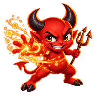
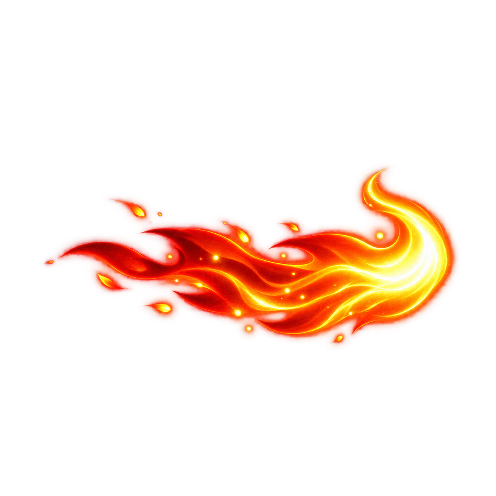

A new Deviload is out
Link in the clipboard:
Found the previous Deviload

Time to update yt-dlp
Download0%

Ready to download
Total0
In progress0
Done0
QUEUE
All tasks
0 active · 0 finished
Your files will appear here
Paste a link above to start a download.
FINISHED FILES
Library 0
Downloaded files from the Deviload history.
Files appear here once downloads finish.
SEARCH
Find media
Find a track or a video and send its link to the downloads.
EDITING
Devil Cut
Build a project from finished videos, add music or export a single clip.